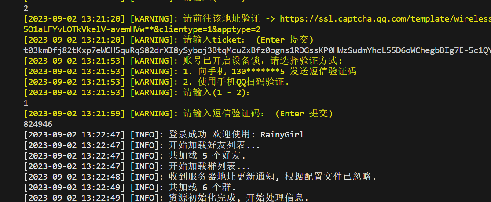
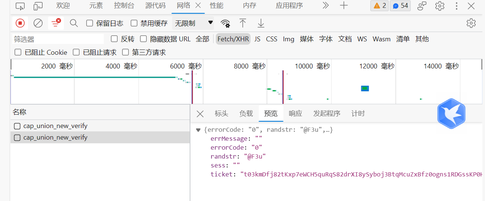

配置 go-cqhttp
Little-UNIkeEN-Bot 是 QQ 机器人前端，只能处理交互逻辑，不能直接实现 QQ 机器人的所有功能。我们需要额外安装驱动器来实现与QQ服务器的信息收发与交互。
1. 安装 go-cqhttp
本 Bot 默认使用 go-cqhttp 作为驱动器，这是一个优秀的无头 QQ 客户端，关于其安装请见 go-cqhttp官网 - 安装 。
2. 配置 go-cqhttp
安装完成后，第一次打开 go-cqhttp 时请选择“HTTP通信”，然后修改生成的 config.yml 文件如下：
# go-cqhttp 默认配置文件
account: # 账号相关
uin: {需要修改的地方1} # QQ账号
password: {需要修改的地方2} # 密码为空时使用扫码登录
encrypt: false # 是否开启密码加密
status: 0 # 在线状态 请参考 https://docs.go-cqhttp.org/guide/config.html#在线状态
relogin: # 重连设置
delay: 3 # 首次重连延迟, 单位秒
interval: 3 # 重连间隔
max-times: 0 # 最大重连次数, 0为无限制
# 是否使用服务器下发的新地址进行重连
# 注意, 此设置可能导致在海外服务器上连接情况更差
use-sso-address: false
# 是否允许发送临时会话消息
allow-temp-session: true
sign-server: {需要修改的地方3} # 签名服务器，推荐 'https://qsign.loli.vet/'
heartbeat:
# 心跳频率, 单位秒
# -1 为关闭心跳
interval: 5
message:
# 上报数据类型
# 可选: string,array
post-format: string
# 是否忽略无效的CQ码, 如果为假将原样发送
ignore-invalid-cqcode: false
# 是否强制分片发送消息
# 分片发送将会带来更快的速度
# 但是兼容性会有些问题
force-fragment: false
# 是否将url分片发送
fix-url: false
# 下载图片等请求网络代理
proxy-rewrite: ''
# 是否上报自身消息
report-self-message: false
# 移除服务端的Reply附带的At
remove-reply-at: false
# 为Reply附加更多信息
extra-reply-data: false
# 跳过 Mime 扫描, 忽略错误数据
skip-mime-scan: false
output:
# 日志等级 trace,debug,info,warn,error
log-level: warn
# 日志时效 单位天. 超过这个时间之前的日志将会被自动删除. 设置为 0 表示永久保留.
log-aging: 15
# 是否在每次启动时强制创建全新的文件储存日志. 为 false 的情况下将会在上次启动时创建的日志文件续写
log-force-new: true
# 是否启用日志颜色
log-colorful: true
# 是否启用 DEBUG
debug: false # 开启调试模式
# 默认中间件锚点
default-middlewares: &default
# 访问密钥, 强烈推荐在公网的服务器设置
access-token: ''
# 事件过滤器文件目录
filter: ''
# API限速设置
# 该设置为全局生效
# 原 cqhttp 虽然启用了 rate_limit 后缀, 但是基本没插件适配
# 目前该限速设置为令牌桶算法, 请参考:
# https://baike.baidu.com/item/%E4%BB%A4%E7%89%8C%E6%A1%B6%E7%AE%97%E6%B3%95/6597000?fr=aladdin
rate-limit:
enabled: false # 是否启用限速
frequency: 1 # 令牌回复频率, 单位秒
bucket: 1 # 令牌桶大小
database: # 数据库相关设置
leveldb:
# 是否启用内置leveldb数据库
# 启用将会增加10-20MB的内存占用和一定的磁盘空间
# 关闭将无法使用 撤回 回复 get_msg 等上下文相关功能
enable: true
# 媒体文件缓存， 删除此项则使用缓存文件(旧版行为)
cache:
image: data/image.db
video: data/video.db
# 连接服务列表
servers:
# 添加方式，同一连接方式可添加多个，具体配置说明请查看文档
#- http: # http 通信
#- ws: # 正向 Websocket
#- ws-reverse: # 反向 Websocket
#- pprof: #性能分析服务器
- http: # HTTP 通信设置
address: 127.0.0.1:5700 # HTTP监听地址
timeout: 5 # 反向 HTTP 超时时间, 单位秒，<5 时将被忽略
long-polling: # 长轮询拓展
enabled: false # 是否开启
max-queue-size: 2000 # 消息队列大小，0 表示不限制队列大小，谨慎使用
middlewares:
<<: *default # 引用默认中间件
post: # 反向HTTP POST地址列表
#- url: '' # 地址
# secret: '' # 密钥
# max-retries: 3 # 最大重试，0 时禁用
# retries-interval: 1500 # 重试时间，单位毫秒，0 时立即
- url: http://127.0.0.1:5701/ # 地址
secret: '' # 密钥
max-retries: 0 # 最大重试，0 时禁用
retries-interval: 3000 # 重试时间，单位毫秒，0 时立即
请记住两处高亮处您设置的端口号，在"部署 Bot"一节，我们将再次用到。
配置文件中的其余部分（如账号登陆状态，消息发送重试次数等），你均可以参考注释，按需更改。
3. 启动 go-cqhttp
完成上述配置后，您可以启动 go-cqhttp。
Windows 环境下直接运行 go-cqhttp.bat
Linux 环境下，在 go-cqhttp 目录下输入以下命令以运行
提示：后台运行与多终端管理
Linux环境下，推荐使用 tmux 管理终端，并在 tmux 中新建一个 session 以后台运行 go-cqhttp
4. 登录问题
在使用 go-cqhttp 登录你的 Bot 账号时，可能会遇到安全验证。在安全验证之前，首先把 device.json 的 "protocol" 值改成5，参考设备型号。

当出现以上选项时，请输入2，将出现的链接复制进浏览器，按F12进入开发者选项。输入captcha以后，开发者窗口会有如下显示：

看到“预览”-“ticket”选项，右键ticket，选择“复制值”，然后将复制的东西粘贴到go-cqhttp里。

5. 注意
- 如你在服务器运行，由于扫码手机与服务器端通常不在同一网络环境下，你可能会遇到扫码失败的情况。此时，你可以在本机使用 go-cqhttp 扫码登录，并将产生的
device.json和session.token文件复制到服务器的 go-cqhttp 目录下，然后重新启动 go-cqhttp。 - 如果gocqhttp提示当前QQ版本过低，请换个号重试